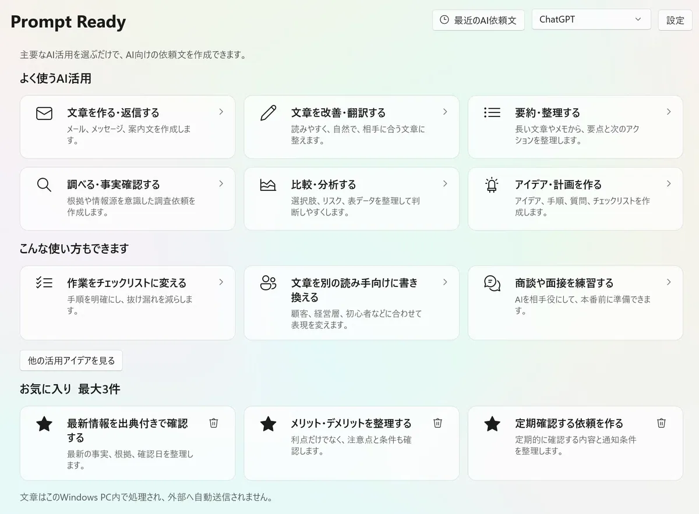
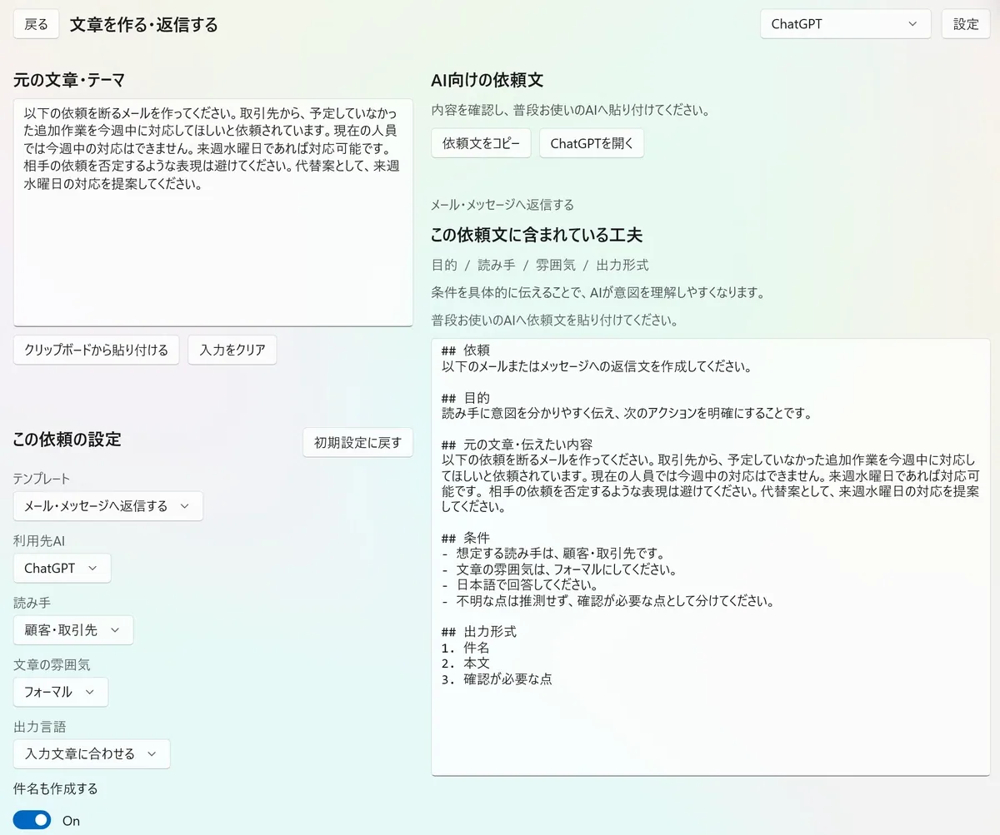

経営判断、実務の対応事項、顧客説明では、同じ資料でも残す内容が異なります。読み手・目的・長さ・出力形式を指定する方法を紹介します。
この記事では、すぐに試せるプロンプト、入力例、確認ポイントを使い、仕事の場面でChatGPTを活用する手順を具体的に説明します。
この記事の要点
- 要約の前に、誰が何を判断するために読むかを決める
- 残す項目、削る項目、長さ、出力形式を指定する
- 資料にない事実や結論を追加しないようにする
- 長い資料は、構成確認・部分要約・全体統合の順に分ける
- 重要な数字、日付、引用は元資料と照合する
ChatGPTの要約は「誰が何を確認するか」で変わる
「この資料を要約してください」だけでは、全体を均等に短くした回答になりやすくなります。しかし、仕事で必要な要約は、読み手と目的によって異なります。
部門責任者が読む場合
結論、業務への影響、必要な判断、リスクを優先します。
実務担当者が読む場合
対応事項、担当、期限、手順、未確認事項を優先します。
顧客へ説明するための要約なら、専門用語を減らし、利用者にとっての変化や必要な操作を中心にします。同じ資料でも、残す情報は変わります。
長い資料を要約するときに指定する5つの条件
- 読み手
経営者、部門責任者、実務担当者、顧客などを指定します。 - 目的
意思決定、状況把握、対応事項の確認、説明文作成などを伝えます。 - 残す情報
結論、数字、期限、リスク、対応事項など、必須項目を列挙します。 - 省く情報
背景の詳細、重複、事例など、今回の目的に不要な情報を指定します。 - 長さと形式
3分で読める長さ、500字以内、表、箇条書きなどを決めます。
長い資料を目的別に要約するプロンプト
以下の資料を要約してください。
## 読み手
[経営者／部門責任者／実務担当者／顧客など]
## 目的
[何を判断・確認するための要約か]
## 必ず残す情報
- [結論]
- [重要な数字や日付]
- [業務への影響]
- [対応が必要なこと]
- [リスクや未確認事項]
## 省く情報
- [詳細な背景／重複する説明／今回の目的に不要な事例など]
## 出力形式
1. 結論
2. 重要ポイント
3. 業務への影響
4. 対応事項
5. 確認が必要な点
## 条件
- [3分で読める長さ／500字以内など]
- 資料に書かれていない事実や結論を追加しないでください。
- 数字、日付、固有名詞は元の記載を維持してください。
## 資料
[文章を貼り付ける、または利用環境で許可されたファイルを添付する]例：部門責任者が3分で確認するために資料を要約する
新しい業務システムの提案資料を、部門責任者が短時間で判断できる形へまとめる場面を想定します。
以下の提案資料を、部門責任者が3分で確認できる長さに要約してください。
導入するかどうかを判断するための資料として使用します。
次の5項目に分けてください。
1. 提案の結論
2. 期待できる効果
3. 費用と導入までの期間
4. 業務への影響と必要な対応
5. 資料だけでは判断できない点
背景説明と事例紹介は短くし、判断に必要な数字、条件、リスクを優先してください。
資料にない内容は推測せず、「資料では確認できない」と記載してください。要約結果のイメージ
結論：既存の申請業務をオンライン化する提案。導入判断には、運用担当者の工数と追加費用の確認が必要。
期待できる効果：紙の申請と転記作業を削減し、承認状況を一覧で確認できる。
費用・期間：資料記載の初期費用は○○円、導入予定期間は契約後3か月。
業務への影響：申請手順の変更、利用者への案内、管理者設定が必要。
確認が必要な点：追加費用が発生する条件、既存データの移行範囲、導入後の問い合わせ窓口。
長い資料は「構成確認・部分要約・全体統合」に分ける
一度に扱いにくい長さの資料や、複数の章からなる文書は、作業を分割します。利用できるファイル添付機能や上限は、利用環境やプランによって異なるため、画面の案内も確認してください。
- 最初に構成を確認する
章、見出し、資料の目的を一覧にします。 - 章ごとに同じ形式で要約する
結論、数字、対応事項、未確認事項など、共通の項目を使います。 - 各要約に章番号を残す
後から元資料へ戻れるようにします。 - 最後に重複をまとめる
章ごとの要約を材料にして、全体版を作ります。 - 重要情報を元資料と照合する
数字、期限、引用、固有名詞を確認します。
この資料を一度に最終要約せず、次の順で進めてください。
1. 見出し構成と各章の目的を一覧にする
2. 私が指定した章を、結論・重要な数字・対応事項・未確認事項に分けて要約する
3. 各要約に元の章番号を付ける
4. 全章の要約がそろった後、重複を除いて全体版を作る
まずは手順1だけを行い、要約本文はまだ作らないでください。仕事の目的別に使える要約プロンプト例
実務担当者向けに対応事項を抜き出す
以下の資料を、実務担当者が対応を開始できる形に要約してください。
決定事項、作業、担当部署、期限、前提条件、未確認事項に分けてください。
背景説明より、実行に必要な情報を優先してください。顧客向けに専門用語を減らして説明する
以下の技術資料を、製品を初めて使う顧客向けに要約してください。
専門用語は必要最小限にし、利用者にとって何が変わるか、必要な操作、利用開始日を中心に説明してください。
内部の開発経緯や顧客に不要な実装詳細は省いてください。複数資料の共通点と相違点を整理する
以下の3つの資料をそれぞれ要約した後、共通点、相違点、矛盾している点を表で整理してください。
どの資料の記述か分かるように、資料A・B・Cの参照を残してください。
資料にない統合結論を勝手に作らないでください。ChatGPTで資料を要約するときの注意点
重要な数字と日付は元資料へ戻る
要約では文脈が短くなるため、条件付きの数字や例外が抜ける可能性があります。意思決定に使う数字、日付、引用は元資料と照合します。
「資料にないこと」を分ける
不足情報から一般的な提案を作る場合は、資料の事実と提案を別の見出しにします。
機密情報や個人情報を確認する
社内資料、顧客情報、契約情報を入力する前に、会社のルールと利用サービスのデータ利用条件を確認します。必要に応じて匿名化します。
最終判断を要約だけで行わない
契約、法律、金融、人事など重要な判断では、要約だけでなく元資料と専門家の確認も必要です。
長い資料を目的別に要約に関するよくある質問
ChatGPTでPDFやWordの資料を要約できますか？
ファイル添付に対応している利用環境では、一般的な文書ファイルを扱える場合があります。利用できる形式や上限はプランと時期によって変わるため、現在の画面や公式案内を確認してください。
長い文章を一度に貼り付けられない場合はどうすればよいですか？
章や見出しごとに分け、同じ出力形式で部分要約を作ります。各部分に番号を付け、最後にそれらだけを材料として全体要約を作ります。
要約に重要な内容が抜ける場合はどうすればよいですか？
必ず残す項目を具体的に列挙し、数字、期限、例外、リスクなどを別見出しにします。元資料と要約の対応表を作らせる方法もあります。
要約の長さはどのように指定すればよいですか？
文字数だけでなく、「3分で読める」「5項目」「各項目3行以内」のように、利用場面と形式を指定すると調整しやすくなります。
仕事向けの指示を、用途から選んで組み立てる
Prompt Ready
この記事で使ったように、ChatGPTへ仕事を頼むときは、元の文章、読み手、目的、条件、出力形式を整理する必要があります。Prompt Readyは、ChatGPT、Gemini、Claudeなどへ渡す依頼文を作成するWindows／macOSアプリです。
メールへの返信、会議メモの整理、文章の書き換え、比較、調査、商談練習などから用途を選び、必要な条件を入力すると、生成AIへ貼り付けられる依頼文を作れます。


長い資料を目的別に要約を仕事で使うために
ChatGPTへ依頼するときは、長いプロンプトを暗記するより、今回の仕事に必要な事実、目的、条件、回答形式を伝えることが重要です。最初の回答を確認し、ずれた部分だけを追加指示で直します。
この記事のテンプレートをそのまま使う場合も、固有名詞、日程、金額、社内ルールなどを今回の状況に合わせて確認してください。